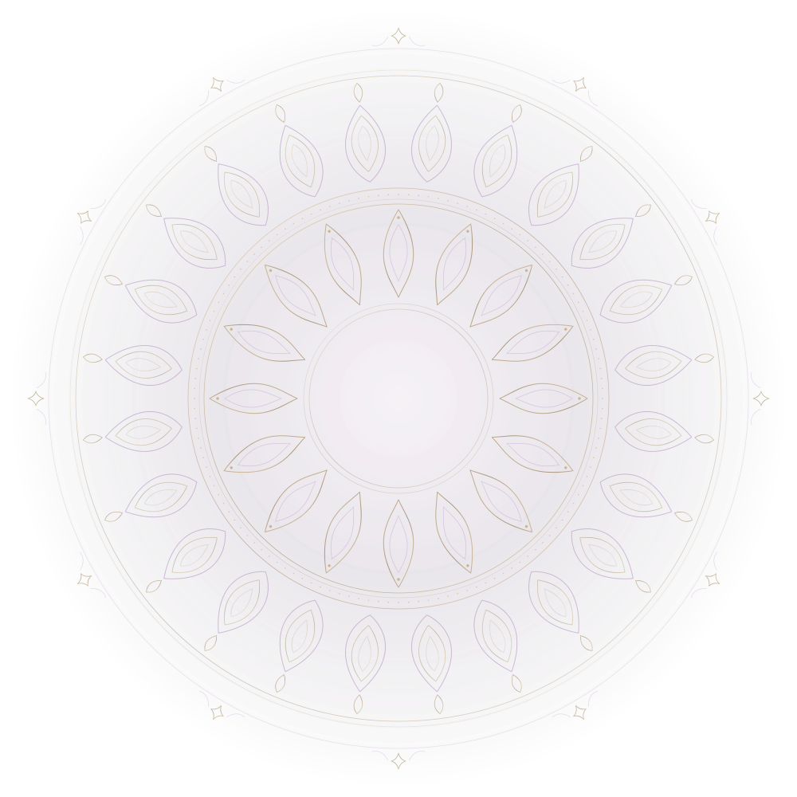

A SMALL PRESENCE IN THE INFINITE
niffe.
“The only thing that makes life possible is permanent, intolerable uncertainty: not knowing what comes next.”

“The only thing that makes life possible is permanent, intolerable uncertainty: not knowing what comes next.”